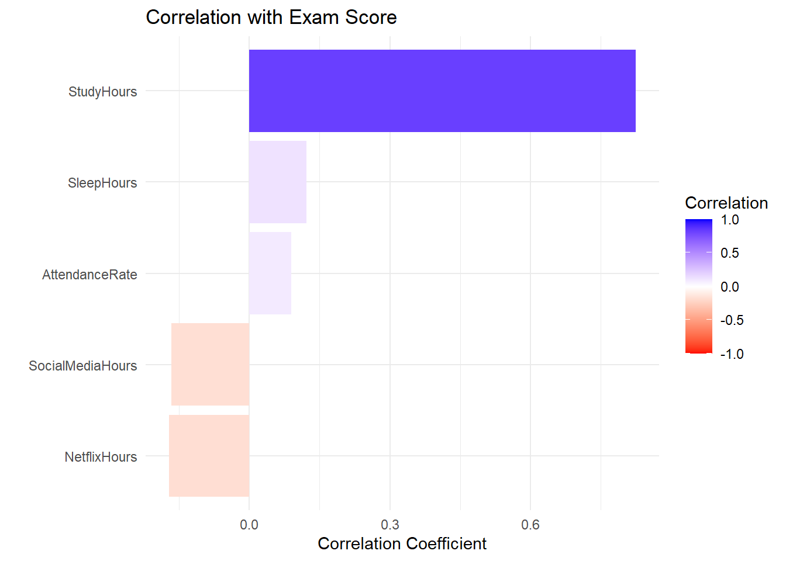
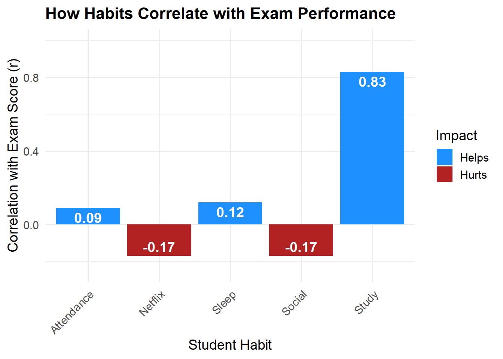
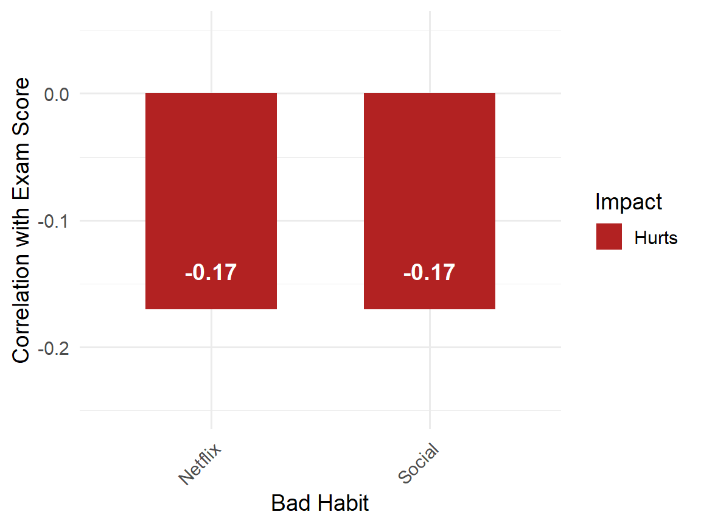

| study_hours_per_day | attendance_percentage | sleep_hours | exam_score | |
|---|---|---|---|---|
| study_hours_per_day | 1.00 | 0.03 | -0.03 | 0.83 |
| attendance_percentage | 0.03 | 1.00 | 0.01 | 0.09 |
| sleep_hours | -0.03 | 0.01 | 1.00 | 0.12 |
| exam_score | 0.83 | 0.09 | 0.12 | 1.00 |
Assignment 3 by team Ctrl+Alt+Analyze
Investigating the relationship between student’s academic performance and lifestyle habits
By Team : Ctrl+Alt+Analyze
Authors:
Malaika
Zuxilu
Kunal
Executive summary
- This report investigates the relationship between student lifestyle habits and academic performance using correlation analysis. We classify study hours, class attendance, and sleep duration as “good” habits, while the time spent on social media, and Netflix usage are treated as “bad” habits.
- Our findings indicate that study hours have the strongest positive correlation with exam scores, while time spent on social media and Netflix show weak negative correlations. Results from our study can be used to guide and inform students about the relationship between their lifestyle choices and academic success.
Introduction
Academic performance is influenced by a range of behavioral and lifestyle factors. Habits such as consistent study routines, classroom attendance, and adequate sleep are commonly associated with better exam outcomes. In contrast, excessive time spent on social media and streaming platforms may reduce focus and study time. This study aims to quantify the relationship between these habits and academic performance using correlation analysis. The dataset includes student-reported habits and their corresponding exam scores. We define “good habits” as study hours, class attendance, and sleep hours, and “bad habits” as social media and Netflix usage. Using correlation matrices and visualizations, we examine how each habit is associated with exam performance. Our goal is to identify which habits have the strongest relationship with scores and whether they are positive or negative. The findings may provide insight into which behaviors support or hinder academic success. This report is structured to include our methodology, results, discussion, and recommendations.
Methodology
This study used correlation analysis to explore the relationship between student habits and academic performance. The dataset included 100 student records with variables such as study hours, class attendance, sleep duration, social media usage, Netflix hours, and final exam scores.
We categorized the variables into two groups:
Good habits: StudyHours, AttendanceRate, SleepHours
Bad habits: SocialMediaHours, NetflixHours
Our target variable for academic performance was ExamScore. To analyze relationships, we calculated Pearson correlation coefficients between each habit variable and ExamScore. This approach allowed us to assess the strength and direction of the linear relationship between variables.
Before analysis, variables were renamed for clarity (e.g., study_hours_per_day → StudyHours). Only complete cases were used to ensure accuracy. A correlation matrix was computed using cor() in R, and visualized using color-coded bar plots to enhance interpretability. Each bar displays the strength and direction of correlation between a habit and exam performance. We also introduced an Impact label that classifies habits as either “Helps” or “Hurts” academic outcomes, based on whether their correlation with exam scores is positive or negative.
Figure 1 shows a bar plot of how good and bad habits correlate with exam scores. Bars are color-coded to indicate positive (“Helps”) or negative (“Hurts”) impact.

Investigating ‘good’ habits’
Figure 2 summarizes how StudyHours, AttendanceRate, and SleepHours relate to exam scores using a labeled bar plot.
StudyHours has a strong positive correlation with ExamScore (r = 0.83).
- Students who study more tend to score higher.
AttendanceRate and SleepHours both show weak positive correlations
- Attendance (r = 0.09) and Sleep (r = 0.12) have little impact on scores.
Conclusion: Among the good habits, studying regularly is clearly the most effective for better academic performance.
use Figure 2

Investigating ‘bad’ habits’
Figure 3 shows how two bad habits relate to exam performance:
- SocialMediaHours and NetflixHours.
Both habits have weak negative correlations with ExamScore (r = -0.17 each).
- More time spent on these may slightly lower scores.
Conclusion: These habits may slightly harm performance, but the effect is not strong or highly predictive.

Results:
The bar plots and Table 2 shows how each lifestyle habit correlates with academic performance. The colors in the plots indicate whether a habit helps (positive correlation) or hurts (negative correlation) exam scores.
StudyHours shows the strongest positive relationship with ExamScore (r = 0.83), reinforcing its importance for academic success. AttendanceRate (r = 0.09) and SleepHours (r = 0.12) show minor positive associations.
On the other hand, both SocialMediaHours and NetflixHours have weak negative correlations with ExamScore (r = -0.17 each), suggesting these habits may slightly hinder performance.
These patterns are visualized clearly through labeled bar plots, making it easier to interpret the influence of each habit on academic performance.
| Correlation with ExamScore | |
|---|---|
| StudyHours | 0.83 |
| AttendanceRate | 0.09 |
| SleepHours | 0.12 |
| SocialMediaHours | -0.17 |
| NetflixHours | -0.17 |
Discussion, Conclusion and Recommendations:
The findings from this analysis reinforce a key academic insight: consistent study habits have the strongest influence on student performance. Among all habits examined, StudyHours had the clearest and most substantial correlation with ExamScore (r = 0.83).
The updated bar plots simplify interpretation by highlighting which habits help or hurt academic performance. Habits like AttendanceRate and SleepHours offered minor positive impacts, while SocialMediaHours and NetflixHours showed weak negative correlations.
Introducing the “Impact” category (Helps/Hurts) made these trends easier to communicate visually, improving accessibility for all readers. While digital distractions like social media and Netflix usage may slightly reduce exam performance, they are not as significant as maintaining regular study routines.
Practically, students should focus on strengthening study habits while being mindful of time spent on digital entertainment. These recommendations are supported by clear visual evidence and measurable correlations.
Future studies could explore whether these relationships hold in larger or more diverse samples, or how other variables such as motivation or time management interact with these habits.
References
Dataset: Student Habits and Performance. Simulated dataset for academic use, 2025.
Ian, A., Syam, M. A., & Rante, A. (2025). The Relationship Between Study Hours and Students’ Academic Achievement. SSRN. https://ssrn.com/abstract=5124254
Abbas, J., Aman, J., Nurunnabi, M., & Bano, S. (2023). Association between social media use and students’ academic performance: A structural equation modeling approach. Education and Information Technologies, 28, 123–145. https://link.springer.com/article/10.1007/s10639-023-12407-y